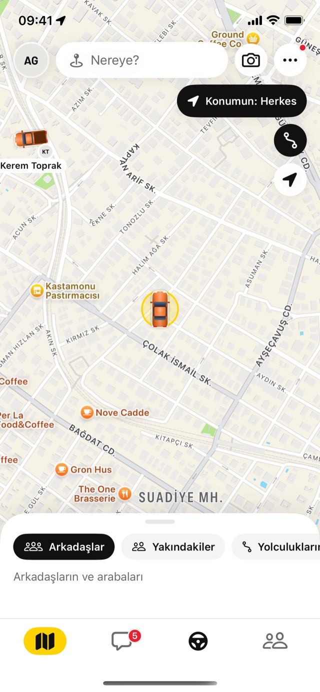
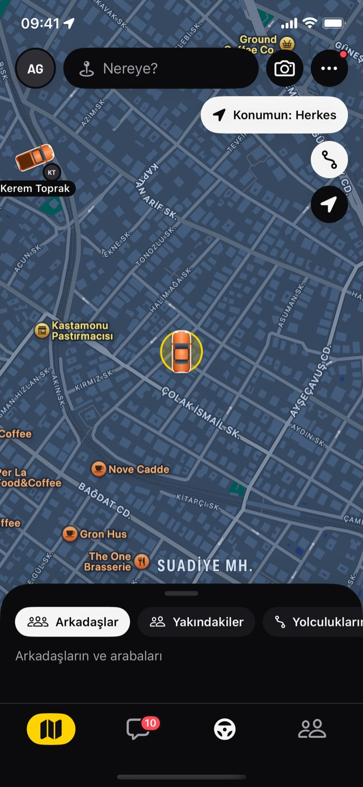
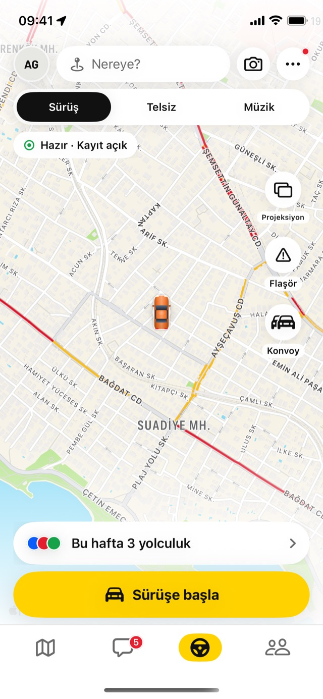
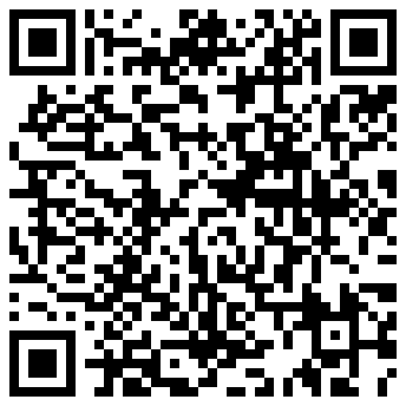
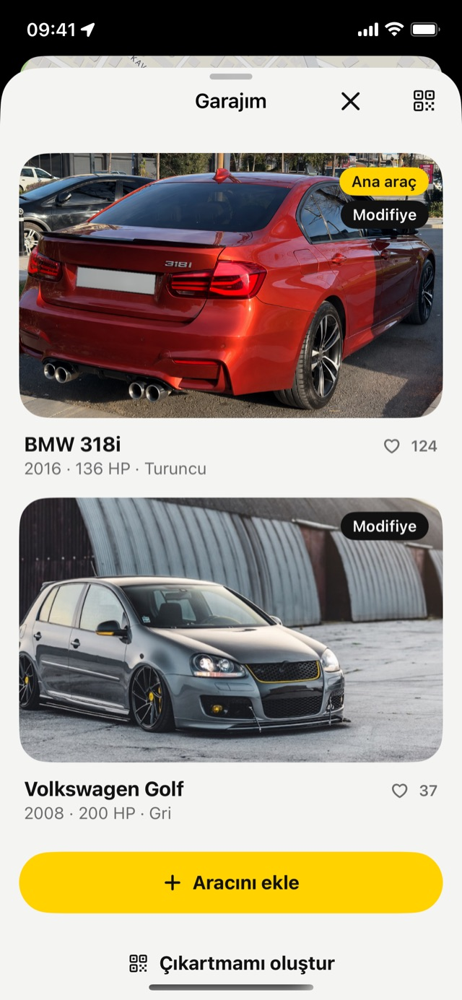
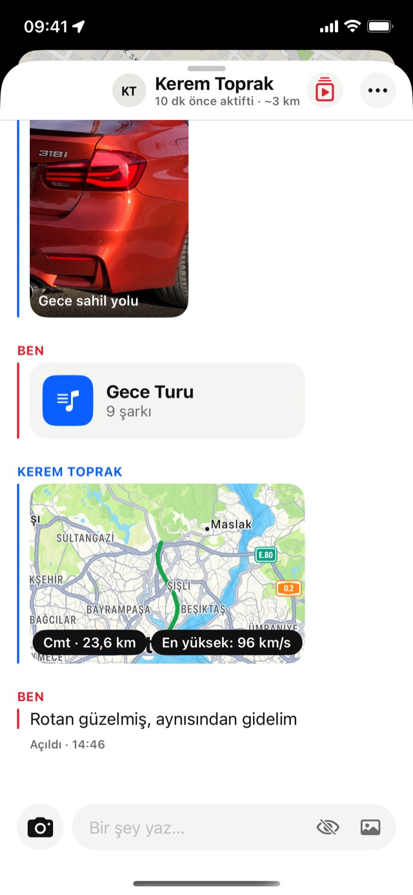

Arabacıların sosyal haritası
Piyasa artık cebinde.
Arkadaşlarını haritada gör, selektörle selamlaş, konvoyla birlikte sür. Kokpit, telsiz, müzik ve garajın tek uygulamada.
iPhone için ücretsiz. Konumun varsayılan olarak kapalı.

Selektör
Piyasanın selamı, bir dokunuşta.
Haritada gördüğün bir sürücüye selektör yap. Onun ekranında farlar iki kez yanıp söner, telefonu titrer. İkiniz de yaptıysanız telsize ya da sohbete geçersiniz.
Araç hareket hâlindeyken selektör gönderilemez. Yolcuysan "Yolcuyum"u açman yeter.

Yolda Kesiştik
Kimlerle aynı yoldan geçtin?
Sürüş bitince PiyasApp kimlerin yanından geçtiğini gösterir. Sağa kaydır selektör yap, sola kaydır geç. Kesin konum saklanmaz, kayıtlar bir hafta sonra silinir.
- KendiliğindenSürüş sırasında yakınından geçen ve haritada görünen sürücüler kaydedilir.
- KarşılıklıSen haritada görünürken toplanır. Görünmeyen kimseyi göremezsin, kimse de seni.
Kokpit
Konvoyu kur, telsizi aç, yola çık.
Kokpit sürüş ekranın. Hızın, yolculuğun ve konvoyun tek bakışta. Sürüşte her şey büyür, yazı gerekmez.
- Konvoy8 araca kadar. Arkadaşlarını çağır ya da QR okut. Ortak hedef, herkes aynı haritada.
- TelsizBas, konuş. Konvoy kurulunca telsiz kendiliğinden bağlanır.
- Konvoy DJ'iDJ çaldığını paylaşır, herkes tek dokunuşla aynı parçayı açar.
- Arama ve yol tarifi YeniBir yere dokun, kartı açılsın. Yol tarifini başlat, Kokpit seni sesle götürsün.

Garaj
Araban vitrinde, QR'ı camında.
Araçlarını ekle: marka, model, güç, fotoğraf. Sonra kendi çıkartmanı oluştur. Trafikte, otoparkta QR'ı okutan seni PiyasApp'te bulur.
- Üç şablonYuvarlak, cam şeridi, plaka altı. Baskıya hazır, yüksek çözünürlüklü.
- Kendi garajınAna aracını seç, beğenileri gör, arkadaşlarının garajını gez.

@piyasapp
Sohbet ve müzik
Listeni paylaş, rotanı göster.
Sohbette yazmanın ötesine geç: çalma listeni, yolculuğunu, Shorts videolarını gönder. Spotify ya da YouTube Music bağlantısını yapıştır, liste PiyasApp'e gelsin.
- MüzikListeni içe aktar ve çal. Müzik sayfasından çıkınca küçük pencerede sürer; sohbette arkadaşına gönder.
- YolculuklarHer yolculuk ayrı renkte, en yüksek hızıyla. Telefonunda kalır, bir hafta sonra silinir. Kaydı istediğin an kapat.
- SohbetFotoğraf, tek görüntülük fotoğraf, video ve kartlar.

Konumun
Kim görecek, sen seçersin.
Tek düğme, üç seçenek. Kapalıyken kimse seni haritada göremez. İstediğin an değiştir.
Sürerken güvenli
Hız 10 km/s'i geçince yazı girişi kapanır, düğmeler büyür. Selektör yalnız dururken ya da yolcuyken.
Engelle, bildir
Rahatsız eden olursa tek dokunuşla engelle. Engellediğin kişi seni haritada da görmez.
Verin senin
Yolculuklar telefonunda kalır. Hesabını uygulamadan istediğin an silebilirsin.
Rehber
İlk 5 dakikada her şey.
PiyasApp'te çok şey var. Buradan başla, sonra istediğin bölüme geç.
Sorular
Merak ettiklerin.
PiyasApp ücretli mi?
Hayır. İndirmesi ve bütün temel özellikleri ücretsiz. Hediye göndermek ya da öne çıkmak gibi birkaç ekstra jetonla çalışır.
Konumumu kimler görür?
Sen ne seçersen: Kapalı, Arkadaşlar ya da Herkes. Yeni hesaplarda konum kapalı başlar. Arkadaşların, birbirinizi takip ettiğiniz kişilerdir.
Sürerken kullanmak güvenli mi?
Kokpit sürüş için tasarlandı: büyük düğmeler, yazı yok, sesli yol tarifi. Yine de telefonu araç tutucuya tak, gözün yolda olsun. Selektör araç hareket hâlindeyken gönderilmez.
Android'de var mı?
Şimdilik yalnız iPhone'da.
Yolculuklarım nerede saklanıyor?
Telefonunda. Haritada en fazla bir hafta görünür, sonra silinir. Kaydı ve paylaşımı ayarlardan kapatabilirsin.
Hesabımı nasıl silerim?
Profil → Ayarlar → Hesabı sil. Bütün verilerin silinir. Ayrıntılar gizlilik politikasında.
Bu akşam piyasada görüşürüz.
Garajını kur, arkadaşlarını ekle, ilk konvoyunu aç.